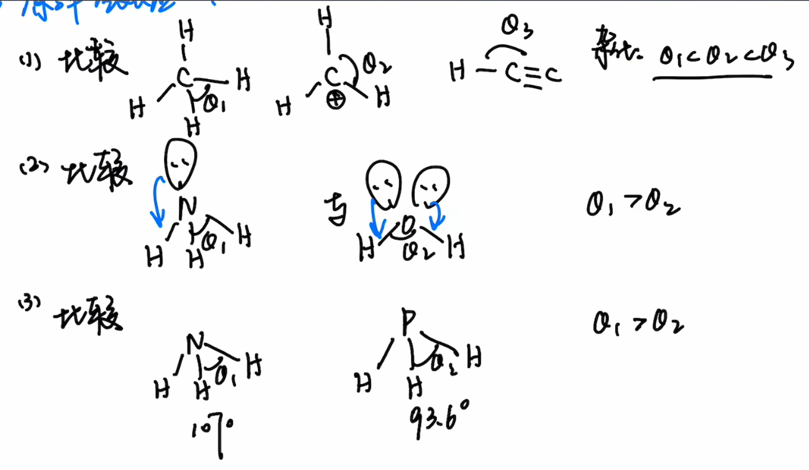
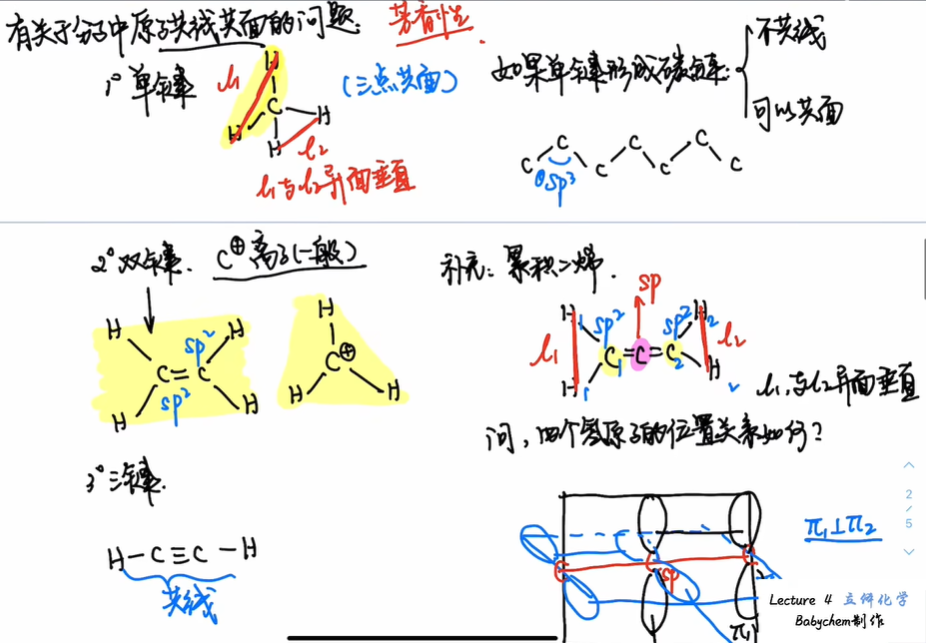

<meta data-alternate="https://freshmark.sunisalex.org/posts/chemistry/babychem/overview-of-stereochemistry/" data-article="true" data-canonical="https://freshmark.sunisalex.org/en/posts/chemistry/babychem/overview-of-stereochemistry/" data-description="This article introduces the basic research objects of stereochemistry, sorting out the hierarchical relationship between the composition, structure, configuration and conformation of molecules, and sorting out the basic judgment methods of molecular collinearity and coplanarity from the aspects of bond length, bond angle, central atom hybridization and lone pair of electrons." data-freshmark-page data-title="Basic Organic Chemistry: Overview of Stereochemistry — Freshmark"><main><header class="container article-header"><a href="/en/" class="back-link">← Back to all writing</a><p class="eyebrow article-subject">Chemistry</p><h1>Basic Organic Chemistry: Overview of Stereochemistry</h1><p class="article-dek">This article introduces the basic research objects of stereochemistry, sorting out the hierarchical relationship between the composition, structure, configuration and conformation of molecules, and sorting out the basic judgment methods of molecular collinearity and coplanarity from the aspects of bond length, bond angle, central atom hybridization and lone pair of electrons.</p><div class="article-meta"><time datetime="2026-07-10">July 10, 2026</time><span>1 min read</span><span>Chemistry Olympiad · Organic Chemistry</span><span class="view-count" data-article-view-count hidden>Article views <strong data-article-views></strong></span><a href="index.md" download>Download Markdown</a><button type="button" class="article-share" data-share-article data-share-text="This article introduces the basic research objects of stereochemistry, sorting out the hierarchical relationship between the composition, structure, configuration and conformation of molecules, and sorting out the basic judgment methods of molecular collinearity and coplanarity from the aspects of bond length, bond angle, central atom hybridization and lone pair of electrons." data-share-title="Basic Organic Chemistry: Overview of Stereochemistry"><span data-share-label>Share article</span></button><output aria-live="polite" class="visually-hidden" data-share-status role="status"></output></div></header><div class="article-wrap"><aside class="toc"><div class="toc-head"><p>On this page</p><button type="button" class="toc-toggle" aria-expanded="false" aria-label="Toggle table of contents" data-toc-toggle><span class="toc-toggle-label">Table of contents</span><span class="toc-toggle-icon" aria-hidden="true"></span></button></div><nav aria-label="Table of contents" class="toc-links" data-toc-links><a href="#introduction" class="toc-level-1">Introduction</a><a href="#preparation-key-parameters" class="toc-level-1">Preparation: key parameters</a><a href="#key-length" class="toc-level-2">Key length</a><a href="#bond-angle" class="toc-level-2">bond angle</a><a href="#questions-about-the-collinearity-and-coplanarity-of-atoms-in-molecules" class="toc-level-3">Questions about the collinearity and coplanarity of atoms in molecules</a></nav></aside><article class="prose"><h1 id="introduction">Introduction</h1><p>How to &quot;identify&quot; a molecule?</p><p>Is it enough to use the molecular formula <span class="math-expression math-inline" data-math-source="\ce{C3H6OCl2}"></span>? Obviously not, one molecular formula can correspond to several isomers.</p><p>The same molecular formula can produce different isomers through different bonding methods.</p><p>With the same bonding method, different isomers can be obtained through different ordering of groups.</p><p>With the same order, different isomers can be obtained through single bond rotation.</p><p>Summary:</p><ul><li>Different atoms ** make up ** molecules and determine the unique molecular formula</li><li>Same molecular formula, different <strong>structure</strong></li><li>Same structure, different <strong>configuration</strong></li><li>Same configuration, different <strong>conformations</strong></li><li>Scale: composition&gt;structure&gt;configuration&gt;conformation The levels studied in stereochemistry are <strong>configuration</strong> and <strong>conformation</strong></li></ul><h1 id="preparation-key-parameters">Preparation: key parameters</h1><p>Bond parameters studied in stereochemistry:</p><ul><li>bond length</li><li>bond angle</li></ul><h2 id="key-length">Key length</h2><figure class="prose-figure"><picture class="responsive-picture"><source srcset="image.freshmark-3a11d313ab94-480w.avif 480w, image.freshmark-3a11d313ab94-895w.avif 895w" type="image/avif"><source srcset="image.freshmark-3a11d313ab94-480w.webp 480w, image.freshmark-3a11d313ab94-895w.webp 895w" type="image/webp"></picture><figcaption>Combined assessment of electronegativity and hybridization</figcaption></figure><p>Conclusion</p><ol><li>The greater the electronegativity, the greater the polarity of the bond and the shorter the bond length.</li><li>Corresponding bond lengths for different hybridizations: <span class="math-expression math-inline" data-math-source="sp\lt sp^2\lt sp^3"></span></li><li>Atomic radius is positively related to bond length</li></ol><h2 id="bond-angle">bond angle</h2><p><picture class="responsive-picture"><source srcset="image-1.freshmark-9a379d9ea23b-480w.avif 480w, image-1.freshmark-9a379d9ea23b-960w.avif 960w, image-1.freshmark-9a379d9ea23b-1440w.avif 1440w" type="image/avif"><source srcset="image-1.freshmark-9a379d9ea23b-480w.webp 480w, image-1.freshmark-9a379d9ea23b-960w.webp 960w, image-1.freshmark-9a379d9ea23b-1440w.webp 1440w" type="image/webp"></picture></p><p>Compare priorities:</p><ol><li>Central atom hybridization</li><li>Lone pair electrons</li><li>Central atom electronegativity</li></ol><h3 id="questions-about-the-collinearity-and-coplanarity-of-atoms-in-molecules">Questions about the collinearity and coplanarity of atoms in molecules</h3><p><picture class="responsive-picture"><source srcset="image-2.freshmark-b5713410c7af-480w.avif 480w, image-2.freshmark-b5713410c7af-926w.avif 926w" type="image/avif"><source srcset="image-2.freshmark-b5713410c7af-480w.webp 480w, image-2.freshmark-b5713410c7af-926w.webp 926w" type="image/webp"></picture></p></article></div><section class="container comments" data-comments data-comments-path="/en/posts/chemistry/babychem/overview-of-stereochemistry/"><div class="comments-head"><div><p class="eyebrow">Comments</p><h2 data-comments-title>Comments</h2></div><p>Sign in to join the discussion. Email is verified only when you register.</p></div><div class="comment-list" aria-live="polite" data-comment-list><p class="comment-state" data-comment-state>Loading comments…</p></div><button type="button" class="comment-more" data-comments-more hidden>Load older comments</button><div class="comment-auth" data-comment-auth><p class="comment-auth-status" data-auth-loading>Checking your session…</p><div hidden data-auth-guest><form class="comment-auth-form" data-auth-login><h3>Sign in to comment</h3><label>Email<input autocomplete="email" name="email" maxlength="254" required type="email"></label><label>Password<input autocomplete="current-password" name="password" maxlength="128" required type="password"></label><div class="comment-form-foot"><p class="comment-form-status" role="status" data-auth-login-status></p><button type="submit">Sign in</button></div></form><details class="comment-register"><summary>Need an account? Register</summary><form class="comment-auth-form" data-auth-register><label>Name<input autocomplete="name" name="name" maxlength="40" required></label><label>Email<input autocomplete="email" name="email" maxlength="254" required type="email"></label><label>Password<input autocomplete="new-password" name="password" maxlength="128" required type="password" minlength="8"></label><p class="comment-auth-hint">Use at least 8 characters.</p><div class="comment-form-foot"><p class="comment-form-status" role="status" data-auth-register-status></p><button type="submit">Register</button></div></form></details></div><form class="comment-auth-form" hidden data-auth-verify><p>We sent a code to your email. Complete registration within 10 minutes.</p><label>Six-digit code<input autocomplete="one-time-code" name="code" maxlength="6" required minlength="6" inputmode="numeric" pattern="[0-9]{6}"></label><div class="comment-form-foot"><p class="comment-form-status" role="status" data-auth-verify-status></p><button type="submit">Complete registration</button></div></form><div class="comment-auth-user" data-auth-user hidden><p>Signed in as <strong data-auth-user-name></strong> <span data-auth-user-email></span></p><button type="button" data-auth-logout>Sign out</button></div></div><form class="comment-form" hidden data-comment-form><label>Comment<textarea maxlength="2000" minlength="2" name="body" placeholder="Share your thoughts…" required rows="5"></textarea></label><p class="comment-markdown-hint">Markdown supported: emphasis, links, quotes, lists, and code.</p><label aria-hidden="true" class="comment-honeypot">Website<input autocomplete="off" name="website" tabindex="-1"></label><div class="comment-form-foot"><p class="comment-form-status" role="status" data-comment-form-status></p><button type="submit" data-comment-submit>Post comment</button></div></form></section></main>